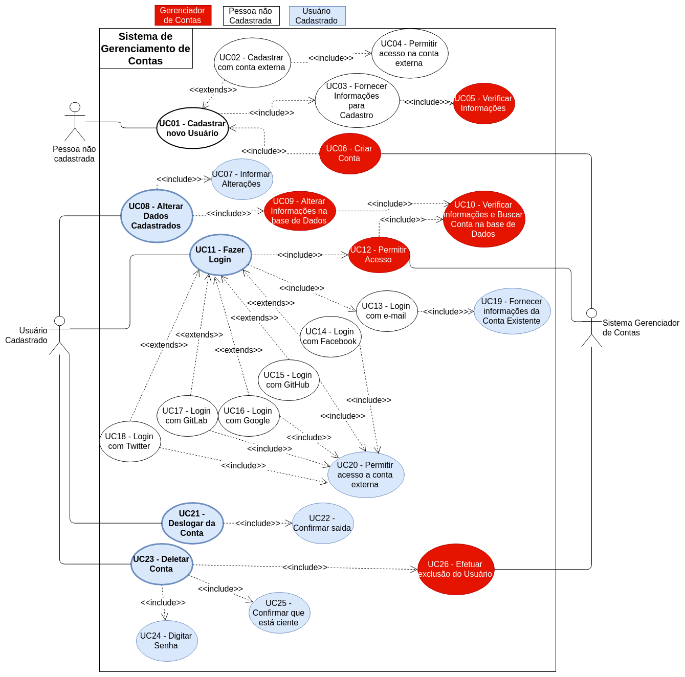
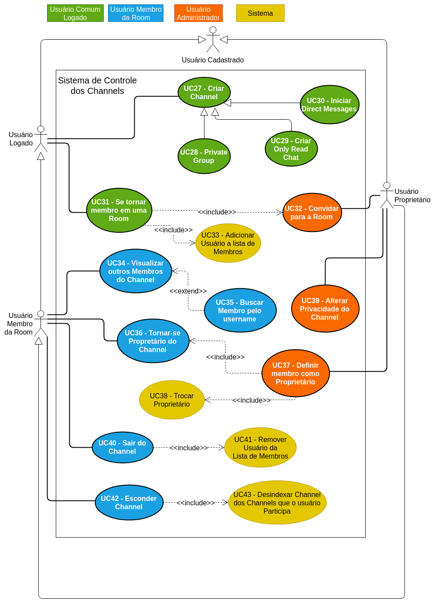
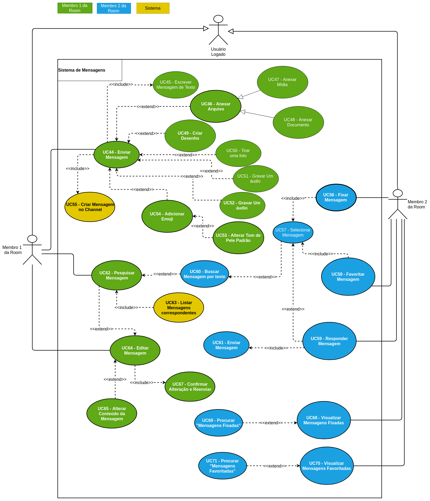
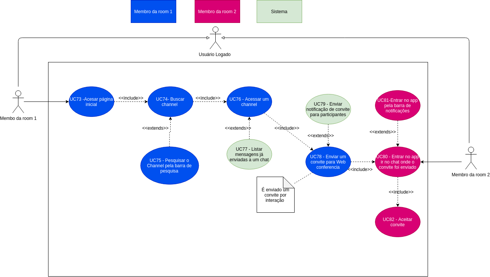
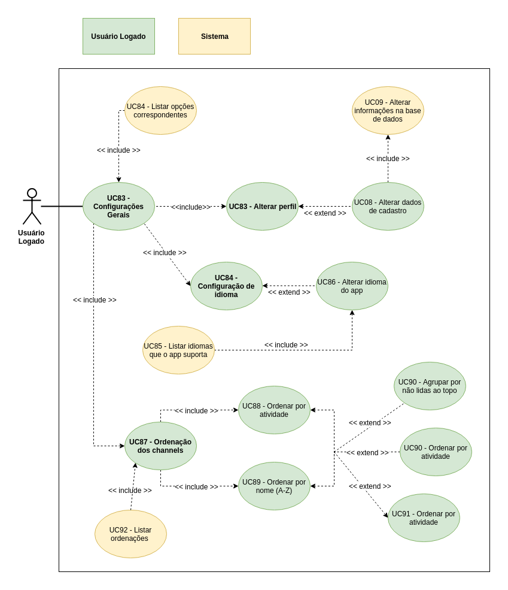
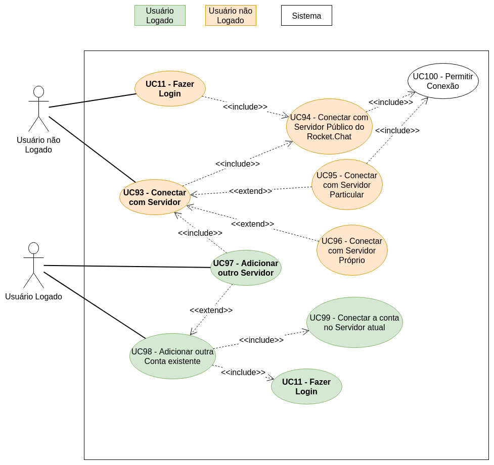

Diagramas de Caso de Uso 2.0
Introdução
Os diagramas de caso de uso são representações esquematizadas possíveis ações que podem ser realizadas pelo usuário dentro da plataforma. Os seguintes casos de uso tiveram como base os cenários levantados pelo grupo. Vale ressaltar que, para fins de melhor descrição de cada caso modelado, os diagramas levantados pela equipe possuem uma especificação de caso de uso. Esse documento é uma evolução do documento Diagrama de casos de Uso. Diferentemente do documento anterior, foi decidido entre os integrantes do grupo que fosse agrupado os casos de uso anteriores por temas, ou ambientes em que o usuário interage dentro do aplicativo Rocket.Chat. Neste documento os "temas" escolhidos para os diagramas são: Gerenciamento de Contas, Mensagens, VideoChat, Configurações gerais, Controle dos Channels/Rooms(Nome a qual são chamados os grupos dentro do aplicativo) e Servidores.
DCU01
Gerenciamento de Contas

-
Id dos casos de Uso gerados: UC01 - UC26
-
Diagrama baseado nos diagramas anterirores:
- DCU5-V1:
- Diagrama inspirado pelo cenário Deletar Conta
- Especificação de casos de uso: EC5
- DCU13-V1:
- Diagrama inspirado pelo cenário Fazer login
- Especificação de casos de uso: EC14
- DCU15-V1:
- Diagrama inspirado pelo cenário Sair do Rocket.chat
- Especificação de casos de uso: EC25
- DCU21-V1:
- Diagrama inspirado pelo cenário Cadastrar novo usuário
- Especificação de casos de uso: EC21
- DCU5-V1:
DCU02
Controle dos Channels

-
Id dos casos de Uso gerados: UC27 - UC43
-
Diagrama baseado nos diagramas anterirores:
- DCU7-V1:
- Diagrama inspirado pelo cenário Visualizar Membros de Chat em Grupo
- Especificação de casos de uso: EC7
- DCU8-V1:
- Diagrama inspirado pelo cenário Mudar privacidade do Channel
- Especificação de casos de uso: EC2
- DCU9-V1:
- Diagrama inspirado pelo cenário Criar only-read Channel
- Especificação de casos de uso: EC3
- DCU10:
- Diagrama inspirado pelo cenário Definir membro de channel como proprietário
- Especificação de casos de uso: EC8
- DCU16-V1:
- Diagrama inspirado pelo cenário Criar chat
- Especificação de casos de uso: EC10
- DCU22-V1:
- Diagrama inspirado pelo cenário Sair de um channel
- Especificação de casos de uso: EC22
- DCU23-V1:
- Diagrama inspirado pelo cenário Esconder um channel
- Especificação de casos de uso: EC23
- DCU7-V1:
DCU03
Mensagens

-
Id dos casos de Uso gerados: UC44 - UC71
-
Diagrama baseado nos diagramas anterirores:
- DCU2-V3:
- Diagrama inspirado pelo cenário Enviar mensagem
- Especificação de casos de uso: EC15
- DCU3:
- Diagrama inspirado pelos cenários Fixar Mensagem e Visualizar Mensagens Fixadas
- Especificação de casos de uso: EC1 e Especificação de casos de uso: EC12
- DCU6-V1:
- Diagrama inspirado pelo cenário Favoritar mensagem
- Especificação de casos de uso: EC6
- DCU11-V1:
- Diagrama inspirado pelo cenário Escolher tom de pele padrão
- Especificação de casos de uso: EC9
- DCU12-V1:
- Diagrama inspirado pelo cenário Pesquisar mensagem
- Especificação de casos de uso: EC13
- DCU18-V1:
- Diagrama inspirado pelos cenários Anexar um arquivo e Anexar um desenho
- Especificações de casos de uso: EC16 e EC17
- DCU19-V1:
- Diagrama inspirado pelo cenário Editar uma Mensagem
- Especificação de casos de uso: EC19
- DCU20-V1:
- Diagrama inspirado pelo cenário Responder uma mensagem
- Especificação de casos de uso: EC18
- DCU2-V3:
DCU04
VideoChat

-
Id dos casos de Uso gerados: UC73 - UC82
-
Diagrama baseado nos diagramas anterirores:
- DCU1-V2:
- Diagrama inspirado pelo cenário Video Chat
- Especificação de casos de uso: EC20
- DCU14-V1:
- Diagrama inspirado pelo cenário Receber notificações
- Especificação de casos de uso: EC24
- DCU1-V2:
DCU05
Configurações Gerais

-
Id dos casos de Uso gerados: UC83 - UC92
-
Diagrama baseado nos diagramas anterirores:
- DCU4-V1:
- Diagrama inspirado pelo cenário Alterar Status
- Especificação de casos de uso: EC4
- DCU4-V1:
DCU06
Servidores

-
Id dos casos de Uso gerados: UC93 - UC100
-
Diagrama baseado nos diagramas anterirores:
- DCU17-V1:
- Diagrama inspirado pelo cenário Conectar com um servidor
- Especificação de casos de uso: EC11
- DCU17-V1:
Versionamento
| Data | Versão | Modificação | Autor |
|---|---|---|---|
| 21/06/2019 | 1.0 | Abertura do documento | Lucas Maciel |
| 21/06/2019 | 1.1 | Padronização da rastreabilidade dos diagramas | Lucas Maciel |
| 21/06/2019 | 1.2 | Adição do Diagrama DCU01 - DCU3 | Lucas Maciel |
| 21/06/2019 | 1.3 | Adição do Diagrama DCU04 | Gabriel Davi |
| 24/06/2019 | 1.4 | Adição do Diagrama DCU05 | André Lucas |
| 24/06/2019 | 1.5 | Adição do Diagrama DCU06 | Lucas Maciel |